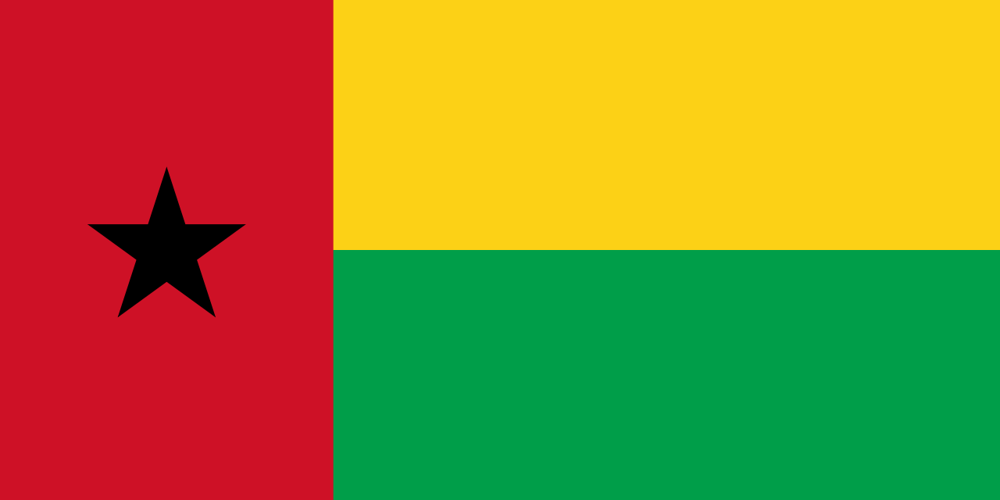

Guiné-Bissau
 A Guiné-Bissau, oficialmente República da Guiné-Bissau, é um país localizado na África Ocidental, com capital em Bissau, na costa atlântica. É vizinha da Guiné ao norte e nordeste, Senegal ao norte, e da região costeira atlântica ao oeste. Com cerca de 36 mil km², é um dos menores países do continente africano. A população é formada por uma diversidade étnica significativa, incluindo os balantas, fulas, manjacos, mandingas e pepéis, refletindo uma rica mistura cultural. A Guiné-Bissau é conhecida por sua biodiversidade única, especialmente o arquipélago dos Bijagós, e possui uma economia baseada na agricultura, pesca e produtos de exportação como caju, castanha de caju, peixe e arroz. Apesar de seu potencial, o país enfrenta desafios de desenvolvimento, instabilidade política e infraestrutura limitada, embora mantenha uma identidade cultural forte e vibrante. A Guiné-Bissau é membro da União Africana, CEDEAO, Comunidade de Países de Língua Portuguesa (CPLP) e ONU.
História
A história da Guiné-Bissau é marcada pela diversidade étnica e pela influência de grandes impérios africanos. Antes da chegada dos europeus, o território era habitado por diversos grupos que mantinham sistemas sociais organizados e comércio entre aldeias. Povos como os balantas, manjacos e mandingas desenvolveram sociedades complexas com práticas agrícolas e redes comerciais locais. No século XV, exploradores portugueses chegaram à costa, estabelecendo feitorias e dando início à colonização. O comércio atlântico, especialmente de escravos, moldou profundamente a história e a sociedade local, causando deslocamentos e tensões entre os grupos étnicos. Durante os séculos seguintes, a Guiné-Bissau permaneceu sob domínio colonial português, mas a resistência local foi constante, manifestando-se através de revoltas e movimentos de guerrilha.
O processo de independência intensificou-se no século XX, com a formação do Partido Africano para a Independência da Guiné e Cabo Verde (PAIGC), liderado por Amílcar Cabral. Após uma luta armada prolongada e organizada, marcada por mobilização popular e estratégias políticas inovadoras, a Guiné-Bissau proclamou sua independência em 24 de setembro de 1973, reconhecida internacionalmente em 1974, após a Revolução dos Cravos em Portugal. Desde então, o país enfrentou desafios políticos, incluindo golpes de Estado e instabilidade governamental, mas mantém sua soberania e continua a desenvolver sua identidade nacional baseada na resistência e na diversidade cultural.
Cultura
A cultura da Guiné-Bissau é profundamente influenciada pelas diversas etnias e tradições locais. A música e a dança são elementos centrais, com destaque para o gumbe, ritmo característico do país, que combina percussão africana tradicional com influências modernas. Festas populares, celebrações religiosas e rituais comunitários envolvem cantos, danças e máscaras, preservando a história e os mitos das diferentes comunidades.
A gastronomia reflete a diversidade de influências africanas e portuguesas, com pratos típicos como o arroz de cuxá, caldeirada de peixe e ensopados de amendoim. A agricultura tradicional fornece ingredientes básicos como arroz, feijão, mandioca, milho e frutas tropicais. O Islã e o Cristianismo coexistem com práticas religiosas tradicionais, criando uma convivência cultural única. O português é a língua oficial, mas línguas nacionais como o crioulo guineense, balanta, fula e manjaco são amplamente faladas, sendo essenciais para a comunicação diária e expressão cultural.


Clima
A Guiné-Bissau apresenta clima tropical, com duas estações principais: a estação chuvosa, de junho a outubro, e a estação seca, de novembro a maio. As temperaturas médias variam entre 24°C e 31°C, e a umidade é elevada na maior parte do ano, especialmente nas regiões costeiras. Essa condição climática favorece a agricultura, especialmente o cultivo de arroz, castanha de caju, mandioca e milho, além da pesca artesanal e comercial nas áreas costeiras. As chuvas influenciam também os ecossistemas e a vida cotidiana das comunidades rurais.
Biodiversidade
A Guiné-Bissau possui uma biodiversidade rica e diversificada, principalmente concentrada no arquipélago dos Bijagós, que é Patrimônio Mundial da UNESCO, e em florestas e savanas do interior. A região costeira e os manguezais abrigam tartarugas marinhas, aves migratórias e espécies de peixe importantes para a economia local. O país também possui áreas de savana e floresta tropical, onde vivem espécies como macacos, antílopes, crocodilos e uma variedade de aves.
Parques nacionais e reservas, como o Parque Natural de Orango e o Parque Nacional de Cantanhez, são fundamentais para a preservação da fauna e flora, protegendo espécies endêmicas e habitats frágeis. Apesar disso, a biodiversidade enfrenta ameaças devido ao desmatamento, caça ilegal e expansão agrícola, exigindo esforços contínuos de conservação e sustentabilidade ambiental.


Cidades
As cidades da Guiné-Bissau refletem a diversidade histórica e geográfica do país. Conacri é o centro urbano mais significativo, mas na Guiné-Bissau, Bissau é a capital e o principal polo político, econômico e cultural, concentrando o governo, comércio, portos e infraestrutura urbana. É também o centro de atividades culturais e festivais nacionais.
Outras cidades importantes incluem Bafatá, conhecida pelo comércio e agricultura local; Gabú, centro histórico e cultural da região leste; e Cacheu, relevante por seu passado colonial e papel no comércio de escravos. Cada cidade contribui para a diversidade do país, representando as tradições das diferentes etnias e desempenhando papéis fundamentais na economia, cultura e vida social da Guiné-Bissau.